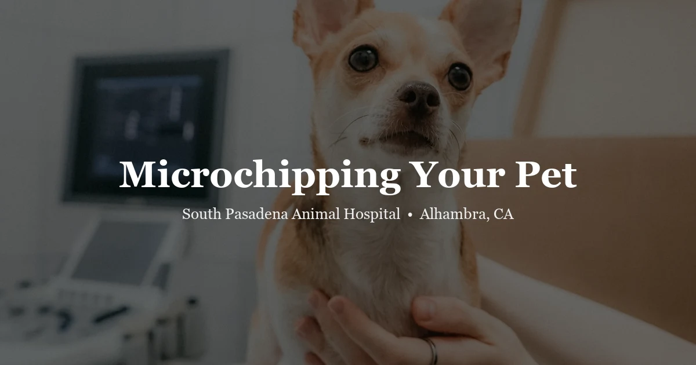

April 17, 2026 · 5 min read
Microchipping Your Pet in Alhambra: What to Expect and Why It Matters

About 1 in 3 pets will get lost at some point in their lives. Collars slip off, ID tags fade, fences fail, doors get left open — the circumstances vary, but the outcome is the same: a terrified animal that doesn't know how to get home. A microchip is the one form of permanent identification that stays with your pet regardless of what happens to their collar. If you're in or near Alhambra, learn more about our pet microchipping service and what the process actually involves.
What Is a Pet Microchip?
A microchip is a passive RFID transponder — roughly the size of a grain of rice — encased in a biocompatible glass capsule. Each chip carries a unique 15-digit ISO identification number. There is no battery, no GPS, and no active signal. The chip only activates when a compatible scanner passes over it, at which point it transmits that unique number.
When a lost pet arrives at a shelter or veterinary clinic, staff use a handheld scanner to check for a chip. If the chip is present, the number is read and cross-referenced against a national pet recovery database. That lookup returns the registered owner's contact information — and that's how reunions happen, sometimes years after a pet first went missing.
The Procedure: Quick and Simple
Microchipping is an injection, not surgery. A sterile needle — slightly larger than the one used for a typical vaccine — is used to deposit the chip under the skin. For dogs and cats, the standard placement site is between the shoulder blades. For rabbits, it's typically the scruff of the neck. Birds and exotic animals vary by species.
No anesthesia is needed for most patients. The procedure takes seconds. Most pets react exactly the way they react to a vaccine injection: a momentary startle, and then they're back to sniffing around the exam table.
We routinely offer microchipping during a wellness exam or at the same appointment as vaccinations. The chip itself is permanent — the biocompatible glass bonds with the surrounding tissue within a few weeks, and migration is rare with modern ISO-standard chips.
The Critical Step Most People Miss: Registration
A chip number is only useful if it's registered in a searchable database with your current contact information. This is where the system most often breaks down.
When SPAH implants a chip, the number goes into your pet's medical record. But the owner must separately register that number with a national pet recovery database — the clinic does not do this automatically on your behalf. Popular registries include Found Animals (free), PetLink, HomeAgain, and 24PetWatch. All of them work with the AAHA Universal Pet Microchip Lookup at petmicrochiplookup.org.
A significant percentage of microchipped pets in shelters cannot be reunited with their owners because the chip was never registered — or because the owner moved and never updated their phone number or address. Registration is free or low-cost and takes five minutes. Do it the same day your pet is chipped.
Do You Need to Microchip an Indoor Cat?
Yes — and this is one of the more common pieces of advice owners push back on. Indoor cats that escape are typically terrified. A frightened cat doesn't behave the way a lost dog does; they run farther, hide, and are much less likely to approach strangers for help.
Natural disasters, open front doors, window screens that weren't latched properly — shelters regularly receive microchipped indoor cats whose owners genuinely believed they'd never need it. The microchip doesn't change your cat's indoor lifestyle. It just creates a path home if the unexpected happens.
Can Exotic Pets Be Microchipped?
Yes, for many species. Rabbits and guinea pigs are routinely microchipped. Larger parrots can be chipped. Some reptiles — particularly larger tortoises and monitor lizards — are good candidates as well. Smaller or more fragile animals may not be appropriate, and technique varies significantly by species.
If you have an exotic pet and want to know whether microchipping makes sense, ask at your exotic animal exam. We'll give you an honest answer for your specific animal.
Frequently Asked Questions
Does microchipping hurt?
It's comparable to receiving a vaccine — a brief pinch as the needle goes in, and it's over in seconds. Most pets tolerate it without any notable reaction. Treats immediately afterward help.
Can a microchip tell me where my pet is right now?
No. Microchips are passive RFID — they have no GPS function and transmit no signal on their own. They can only be read by a scanner held within a few inches of your pet. If you want real-time location tracking, GPS collar attachments exist separately for that purpose, though they require battery charging and a subscription.
My pet has a chip but I'm not sure it's registered. What should I do?
Go to petmicrochiplookup.org, which is the AAHA Universal Pet Microchip Lookup tool. Enter your pet's chip number (your vet can provide it if you don't have it) and it will search across multiple registries simultaneously. If no record comes up, register it right away through one of the free databases.
How much does microchipping cost?
See our pricing page for current fees. Microchipping is often bundled with a wellness exam visit, which is one of the most cost-effective ways to get it done.
Do you microchip rabbits and small animals?
Yes. Ask at your next visit or call us at (626) 441-1314 to find out if your specific animal is a good candidate and how to schedule it.
The procedure takes seconds and the chip lasts your pet's lifetime. If you'd like to get your pet microchipped or check whether a chip they already have is properly registered, get in touch or visit our microchipping page for more details. We're at 3116 W Main St in Alhambra.